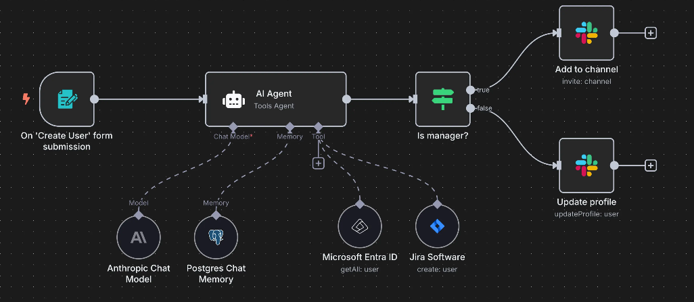

Explorá el repositorio oficial de javascript.info en GitHub y accedé
a una guía completa sobre JavaScript moderno. Desde conceptos como
"strict mode"y tipos de datos, hasta funciones, estructuras de
control y buenas prácticas. Ideal para quienes quieren
dominar el lenguaje desde sus fundamentos con ejemplos claros y
documentación mantenida por la comunidad.
Automatización Inteligente con N8N: Crea workflows sin escribir código

Fuente: N8N.io - Workflow Editor
¿Te imaginás automatizar tareas repetitivas sin necesidad de programar?
N8N es una herramienta de automatización open source que te permite conectar servicios,
APIs y lógica condicional en flujos visuales. En este artículo te muestro qué es N8N, cómo funciona y cómo
podés usarlo para optimizar procesos reales con integración de inteligencia artificial.
Model Context Protocol (MCP): Protocolo para integrar LLMs en
aplicaciones
Fuente: Model Context Protocol
Conocé MCP, un protocolo estandarizado que permite conectar modelos
de lenguaje (LLMs) con herramientas, bases de datos y servicios
exteriores. Ideal para desarrolladores full stack que trabajan con
inteligencia artificial integrada. Aprendé su arquitectura y uso.